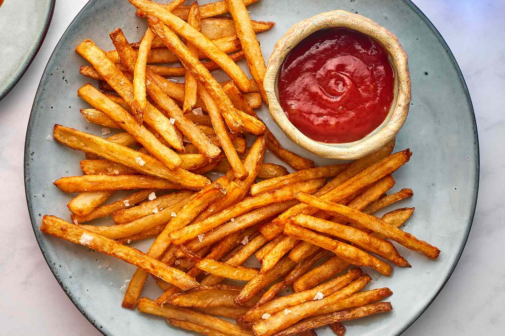

French Fries

French fries, also known as chips, finger chips, or french-fried potatoes, are a side dish or snack made from deep-fried potato strips. They are typically cut into thin strips, washed, dried, and then deep-fried in vegetable oil until golden brown. French fries are often salted and served with ketchup, mayonnaise, or vinegar.
Ingredients
- 4 large russet potatoes
- Vegetable oil, for frying
- Salt, to taste
Instructions
- Scrub the potatoes clean under cold running water to remove any dirt. Peel the potatoes, if desired, or leave the skins on for a rustic texture. Cut the potatoes into uniform strips about 1/4 to 1/2 inch thick. You can cut them thicker for steak fries or thinner for shoestring fries.
- Place the cut potatoes in a large bowl of cold water. Let them soak for about 30 minutes to remove excess starch, which helps achieve crispier fries. After soaking, drain the potatoes and pat them dry thoroughly with paper towels or a clean kitchen towel.
- In a large, deep pot or Dutch oven, heat vegetable oil over medium-high heat until it reaches 325°F to 350°F (163°C to 177°C). Use enough oil to fully submerge the fries.
- Carefully add a small batch of potatoes to the hot oil, being careful not to overcrowd the pot. Fry for about 3-4 minutes, until the fries are just starting to cook but not yet golden brown. Remove the partially cooked fries from the oil using a slotted spoon or spider strainer and transfer them to a wire rack set over a baking sheet to drain excess oil.
- Increase the heat of the oil to 375°F to 380°F (190°C to 193°C). Working in batches again, return the partially cooked fries to the hot oil and fry for an additional 2-3 minutes, or until they are golden brown and crispy. Once done, remove the fries from the oil and place them back on the wire rack to drain.
- Immediately season the hot fries with salt, to taste. Serve the French fries hot and crispy, with your favorite dipping sauces such as ketchup, mayonnaise, or aioli.